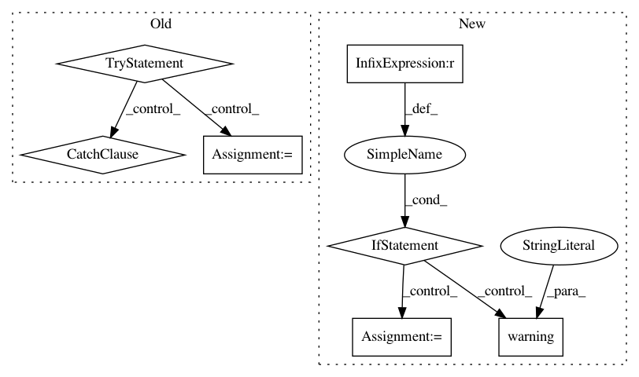

fd633602af08b199d87d222a8cfb85acea17b55a,optuna/visualization.py,,_get_intermediate_plot,#Any#,52
Before Change
showlegend=False
)
try:
df = study.trials_dataframe()
df = df.rename(columns={"number": "trial_id"})
except Exception: // empty study
return go.Figure(data=[], layout=layout)
if "intermediate_values" not in df:
return go.Figure(data=[], layout=layout)
target_state = [TrialState.PRUNED, TrialState.COMPLETE, TrialState.RUNNING]
After Change
trials = study.trials
if len(trials) == 0:
logger.warning("Study instance does not contain trials.")
return go.Figure(data=[], layout=layout)
if hasattr(trials[0], "intermediate_values") is False:
logger.warning(
"You need to set up the pruning feature to utilize plot_intermediate_values()")
return go.Figure(data=[], layout=layout)
target_state = [TrialState.PRUNED, TrialState.COMPLETE, TrialState.RUNNING]
trials = [trial for trial in trials if trial.state in target_state]
traces = []
for trial in trials:
trace = go.Scatter(
x=tuple(trial.intermediate_values.keys()),
In pattern: SUPERPATTERN
Frequency: 3
Non-data size: 7
Instances
Project Name: pfnet/optuna
Commit Name: fd633602af08b199d87d222a8cfb85acea17b55a
Time: 2019-09-11
Author: suehiro619@gmail.com
File Name: optuna/visualization.py
Class Name:
Method Name: _get_intermediate_plot
Project Name: biolab/orange3
Commit Name: 532c5db2b1520bc7422fa106576b11e36f4721ab
Time: 2015-08-06
Author: ales.erjavec@fri.uni-lj.si
File Name: Orange/canvas/help/manager.py
Class Name:
Method Name: create_html_inventory_provider
Project Name: biolab/orange3
Commit Name: 532c5db2b1520bc7422fa106576b11e36f4721ab
Time: 2015-08-06
Author: ales.erjavec@fri.uni-lj.si
File Name: Orange/canvas/help/manager.py
Class Name:
Method Name: create_html_provider